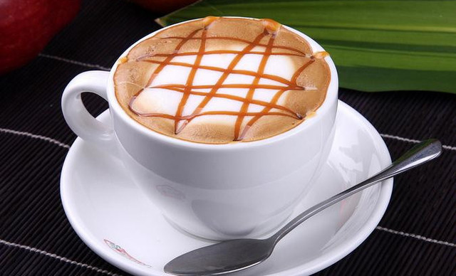
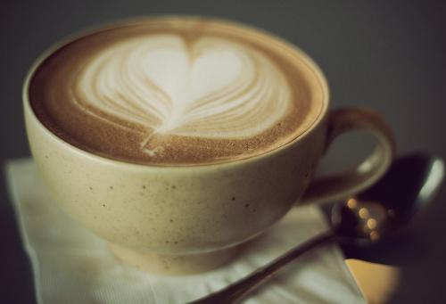

星巴克
星巴克(Starbucks)是美国一家连锁咖啡公司的名称，1971年成立，为全球最大的咖啡连锁店，其总部坐落美国华盛顿州西雅图市。星巴克旗下零售产品包括30多款全球顶级的咖啡豆、手工制作的浓缩咖啡和多款咖啡冷热饮料、新鲜美味的各式糕点食品以及丰富多样的咖啡机、咖啡杯等商品。
雀巢咖啡
雀巢咖啡拥有1+2系列咖啡、馆藏系列咖啡、醇品咖啡、"雀巢金牌"咖啡等速溶咖啡和Dolce Gusto胶囊咖啡机等系列咖啡产品，产品销往全球100多个国家和地区，为人们带来无限灵感。
摩卡咖啡
摩卡咖啡（CafeMocha）是一种最古老的咖啡，其历史要追溯到咖啡的起源。它是由意大利浓缩咖啡、巧克力酱、鲜奶油和牛奶混合而成，摩卡得名于有名的摩卡港。十五世纪，整个中东非咖啡国家向外运输业不兴盛，也门摩卡是当时红海附近主要输出一个商港，当时咖啡主要是集中到摩卡港再向外输出的非洲咖啡，都被统称摩卡咖啡。而新兴的港口虽然代替了摩卡港的地位，但是摩卡港时期摩卡咖啡的产地依然保留了下来，这些产地所产的咖啡豆，仍被称为摩卡咖啡豆。
卡布奇诺咖啡
卡布奇诺是一种加入以同量的意大利特浓咖啡和蒸汽泡沫牛奶相混合的意大利咖啡。此时咖啡的颜色，就像卡布奇诺教会的修士在深褐色的外衣上覆上一条头巾一样，咖啡因此得名。传统的卡布奇诺咖啡是三分之一浓缩咖啡，三分之一蒸汽牛奶和三分之一泡沫牛奶，并在上面撒上小颗粒的肉桂粉末。

焦糖玛奇朵咖啡
焦糖玛琪朵是在香浓热牛奶上加入浓缩咖啡、香草，再淋上纯正焦糖而制成的饮品。Macchiato意大利文，意思是“烙印”和“印染”，中文音译“玛奇朵”。“Caramel”意思是焦糖。焦糖玛琪朵，寓意“甜蜜的印记”。

拿铁咖啡
意大利人早晨的厨房里，照得到阳光的炉子上通常会同时煮着咖啡和牛奶。喝拿铁的意大利人，与其说他们喜欢意大利浓缩咖啡，不如说他们喜欢牛奶，也只有咖啡才能给普普通通的牛奶带来让人难以忘怀的味道。
维也纳咖啡
这是一款奥地利著名的咖啡，以浓浓的鲜奶油和巧克力的甜美风味迷倒众多咖啡爱好者。它的外型就很吸引人，不仅如此，隔着甜甜的巧克力糖浆、冰凉的鲜奶油来喝热乎乎的咖啡，更是别有风味，有点像摩卡咖啡的感觉。品尝维也纳咖啡的技巧在于不要去搅拌咖啡，而是享受杯中三段式的快乐：首先是冰凉的奶油，柔和爽口；然后是浓香的咖啡，润滑微苦；最后是甜蜜的糖浆，即溶未溶的关键时刻，带给你发现宝藏般的惊喜。
白咖啡
白咖啡是马来西亚的土特产，约有100多年的历史。白咖啡并不是指咖啡的颜色是白的，而是采用特等Liberica（利比里亚） 、Arabica（阿拉比卡）和 Robusta（罗布斯塔）咖啡豆及特级的脱脂奶精原料。它们经中轻度低温烘培及特殊工艺加工后大量去除咖啡碱，去除高温碳烤所产生的焦苦与酸涩味，将咖啡的苦酸味、咖啡因含量降到最低，甘醇芳香不伤肠胃。同时，保留咖啡原有的色泽和香味，口感爽滑，纯正，颜色比普通奶咖更清淡柔和，淡淡的奶金黄色，故得名为白咖啡。
黑咖啡
黑咖啡(原味)是不加任何修饰的咖啡，黑咖啡带来的是品味咖啡的原始感受。黑咖啡集合了咖啡香甘醇酸苦五味的特点。黑咖啡中咖啡因的含量特别高，这是一种能直接作用于人类神经和心脏以及呼吸系统的重要成分，它能让人体内的多个器官保持兴奋，而且能提高人体内神经功能，缓解肌肉疲劳，人们在精神疲惫或身体无力时，及时喝一些黑咖啡，就能促进体力恢复，也能让精神不振的感觉很快消失。
美式咖啡
“美式咖啡”（英文：Americano，意大利语：Caffè Americano）咖啡的一种，是最普通的咖啡。是使用滴滤式咖啡壶所制作出的黑咖啡，又或者是意式浓缩中加入大量的水制成。 美式咖啡口味比较淡。因为一般的萃取时间相对较长（大概四五分钟），所以咖啡因含量较高。